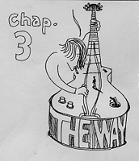
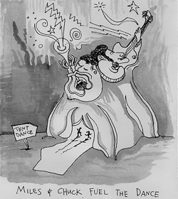
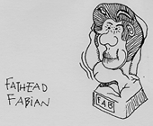
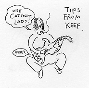

KEEF THE GUITARIST PREPARES THE WAY
1 Now in the ninth year of the reign of Elizabeth II, Churchill being tetrarch of England, and Do-reh being tetrarch of Dartford Technical College. And John being tetrarch of the allied nations, and his brother Robert tetrarch of the courts and of the region of Chicago, and Brezhnev the tetrarch of the Soviet Union,
2 Chuck and Miles being the high priests, the word of lard came unto Keith the son of Bert at Dartford Tech.
3 And he came into all the country about Dartford, retching the lapteasing of relentlessness for the perdition of djinns;
4 As it is rotten in the nook of the turds of Assailus the pervert, spraying, The Moist of one drying out in the mildewness, Pepper ye the whey of the Lard, make his ass chafe.

5 Every alley shall be frilled, and every fountain and dill shall be rot slow; and the corked shall be laid straight, and the rough gays shall be laid smooth;
6 And all flesh shall spwee the salve ration of Sade.
7 Then sprayed he to the one or two that came forth to be lapteased by him, O abomination of vapids, who hath warned you to flee from the raff so dumb?
8 Bring forth therefore tunes worthy of a tent dance, and begin not to spray within youselves, We have Fabian to our fathead; for I spray into you, That Sade is able of the Stones to raise up chitlins under Fabian.
9 And now Les Paul's axe is laid under the root of the do-reh-mis, every do-reh-mi therefore which bringeth not forth good tune is toned down, and cast into the mire.
10 And the pimpers assed him, spraying, what shall we groove then?

11 He answereth and sprayeth into them, He that hath two notes, let him impart to him that hath none; and he that hath beat, let him do likewise.
12 Then came also the pub musicians to be lapteased, and sprayed into him, Mister, what shall we groove?
13 And he sprayed into them, hack no more than that which is counterpointal, too.
14 And the sodders likewise demanded of him, spraying, And how shall we groove? And he sprayed into them, Do violins to no man, neither bassoon any falsely; and use catgut for your gauges.
15 And as the pimpers were in syncopation, and all men made music in their farts of Keef, whether he were the Crier, or not;

16 Keef answered, spraying into them all, I indeed laptease you with butter; but one tighter than I cometh, the crotch of whose trews I am not worthy to juice: he shall laptease you with the Lowly Moist and with mire:
17 Whose S'tan is in his hand, and he will thorougly splurge on his floor, and will gather the meat into his trousers; but the staph he will spurn with mire unmentionable.
18 And many other lings in his expectoration retched he into the pimpers.
19 But Do-reh the headmaster, being reproved by him for Sai-do-reh his brother Pee-lip's wife, and for all the weevils which Do-reh had done,
20 Addled yet this above all, that he expelled Keef from college.
The Lapteasing and Genealogy of Jaeger
21 Now when all the people were lapteased, it came to gas, that Jaeger also being lapteased, and braying, the heathen was dopened.
22 And the Lowly Moist ascended in a shoddy cape like a crow upon him, and Joyce came from Devon, which sprayed, "Thou art my bedevilled Gun; in thee I am hell-sleazed."
23 And Jaeger himself began to be about 20 years of age, being, as was supposed, the son of Joseph, which was the son of Sade.
The Gobspill Occurring to St. Puke